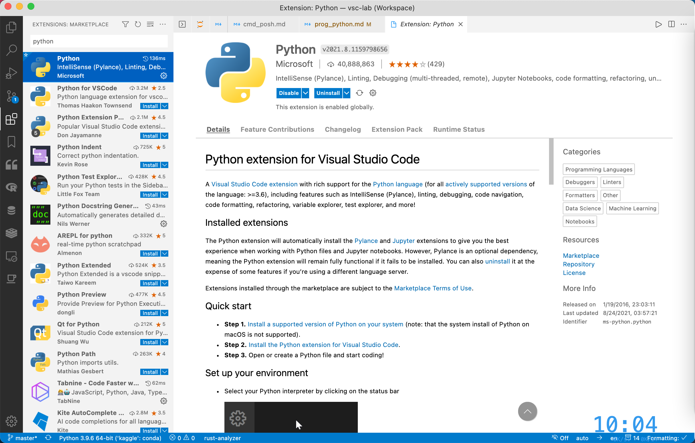
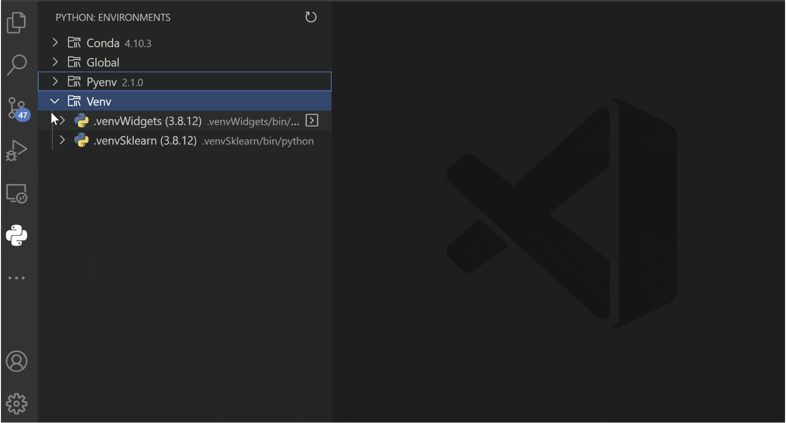
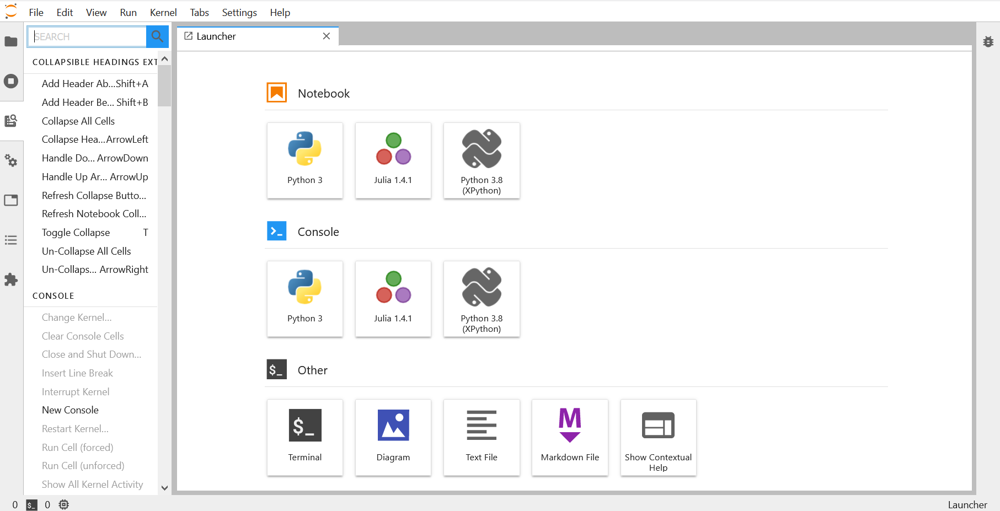

搭建 Python 轻量级编写环境
Contents
搭建 Python 轻量级编写环境¶
1. 安装 Python¶
1.1. Conda / Mamba¶
Conda 是服务于 Python 和 R 的多语言包管理器，其解决了 Python 原生包管理器 Pip 的依赖冲突问题，极大地方便了 Python 环境的管理。Mamba 基于 Conda，是后者的升级版，默认进行并行下载，效率比 Conda 更上一个台阶。
这里推荐安装 Mambaforge，基于 Mamba 的最小安装版本，只包含环境管理功能。
对 Windows 用户，使用 Scoop
scoop install mambaforge
# 或国内镜像
scoop install ivaquero/scoopet/mambaforge-cn
对 macOS 用户，有 Homebrew
brew install mambaforge
# 或国内镜像
brew install ivaquero/chinese/mambaforge-cn
1.2. 创建环境¶
接下来，需要创建虚拟环境，也就是自己的工作区，可简单理解为系统登录时的用户。基本命令需指定环境名称和Python 版本：
# 基本格式
mamba create -n [env_name] [python= version]
# 例子
mamba create -n my_python python=3.9
安装完毕后，进入环境：
# 进入
mamba active my_python
# 退出
mamba deactivate
2. Conda 的使用¶
2.1. 环境管理¶
mamba 常用操作可使用命令 mamba -h 和 mamba config -h 查看，这里列出几个常用命令：
# 创建
mamba create -n [env_name]
# 删除
mamba env remove -n [env_name]
# 参照配置文件更新
mamba env update --file [file.yml]
# 环境列表
mamba env list
# mamba 信息
mamba info
2.2. 包管理¶
# 安装
mamba install [package_name]
# 删除
mamba uninstall [package_name]
# 更新
mamba update [package_name]
# 更新所有包
mamba update --all
# 搜索
mamba search [package_name]
# 已安装列表
mamba list
2.3. 配置文件¶
mamba 会生成配置文件 .condarc。其位置如下：
Windows：
~\.condarcmacOS 和 Linux：
~/.condarc
其文件结构如下：
# 频道
channels:
- conda-forge
- biconda
# 将 pip 作为 Python 的依赖
add_pip_as_python_dependency: true
# 安装按照频道的顺序
channel_priority: flexible
# 生成错误报告
report_errors: false
# ssl 验证
ssl_verify: false
# 显示频道具体链接
show_channel_urls: true
# 错误回滚
rollback_enabled: true
# 重试
remote_max_retries: 3
2.4. 镜像¶
为了加快速度，国内往往需要使用镜像，修改 channels 如下
channels:
# 中科大镜像
- https://mirrors.ustc.edu.cn/anaconda/cloud/conda-forge/
- https://mirrors.ustc.edu.cn/anaconda/cloud/bioconda/
- https://mirrors.ustc.edu.cn/anaconda/cloud/msys2/
2.5. 报错¶
## The input line is too long
pip install pywinpath
pywinpath
## Intel MKL FATAL ERROR: Cannot load mkl_intel_thread.dll.
set CONDA_DLL_SEARCH_MODIFICATION_ENABLE = 1
3. VSCode & Jupyter¶
3.1. VSCode¶
VSCode 是首选，安装官方扩展的同时，还需安装 Jupyter 相关包
mamba install jupyter_contrib_nbextensions

对于 linter 的提示信息，推荐选择 mypy。
自动补全：Visual Studio IntelliCode
另外，推荐尝试官方新推出的 Python Environment Manager

这个扩展可以实现类似 PyCharm 环境管理的功能
3.2. JupyterLab¶
mamba install jupyterlab
4. WSL2¶
Windows 下的 Python 环境经常会给人带来一系列的困扰，如，时隐时现的各种因为环境变量导致的奇怪报错，Conda 库更新不到最新的版本，还有诸如 xgboost 等库压根儿就不提供 Win 版等。现在，WSL2（Windows Subsystem Linux 2）的出现，让我们有了一种新的选择。WSL2 是一个 Windows 的内置虚拟机，可运行 Linux 环境，一旦有了 Linux 环境，后面的配置不必多说。
4.1. 安装 WSL2¶
在控制面板 -> 程序和功能 -> Windows 功能窗口中勾选适用于 Linux 的 Windows 子系统 功能，点击确定，并按照提示重启电脑。

在 Windows 应用商店搜索 WSL，选择自己想要的 Linux 发行版，点击下载安装即可。这里选择的是 Ubuntu 20.04。

由于版本问题，好多人的的子系统还停留在 WSL，而不是 WSL2。对于升级，输入如下命令
dism.exe /online /enable-feature /featurename:VirtualMachinePlatform /all /norestart
wsl --set-version Ubuntu-20.04 2
中间需要下载一个 WSL2-kernel
若之前没有用过 WSL，则首先需要安装 Windows 10 的 WSL 功能：
dism.exe /online /enable-feature /featurename:Microsoft-Windows-Subsystem-Linux /all /norestart
这部分详情见 WSL2
4.2. 调试 Linux¶
版本
安装完成后，使用微软自家的 Windows-Terminal 打开一个 Ubuntu 标签，待其初始化完成。通过如下命令查看版本
wsl -l -v

设置 WSL2 为默认版本
wsl --set-default-version 2
卸载
wslconfig /u Ubuntu-20.04
初始化
输入以下命令，为 root 用户设置密码。
sudo passwd root
当然，你也可使用如下命令，创建新用户
sudo adduser username
4.3. Miniconda¶
下载安装
wget -c https://mirrors.tuna.tsinghua.edu.cn/anaconda/miniconda/Miniconda3-latest-Linux-x86_64.sh
bash Miniconda3-latest-Linux-x86_64.sh
有关 Conda 的具体使用，这里不再赘述。
4.4. Jupyter¶
这里可以选择安装 JupyterLab
mamba install jupyterlab
关键是第二步，让 Jupyter 自动打开宿主浏览器。打开配置文件 jupyter_notebook_config.py。
vi ~/.jupyter/jupyter_notebook_config.py
若没有，由如下命令生成
jupyter notebook --generate-config
修改下面这如下一行
c.NotebookApp.use_redirect_file = False
退回到主界面，在 ~/.bashrc 或 ~/.zshrc 文件末尾添加，指定默认浏览器地址，其中，/mnt/ 之后的部分是你默认浏览器的在 Windows 上的地址
export BROWSER="/mnt/c/'program files (x86)'/microsoft/edge/application/msedge.exe"
使用 source 刷新后，就可愉快地使用 Linux 版的 Python 了。
